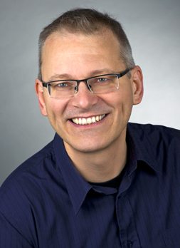

Born 25-APR-1961 in Heidelberg, Germany, married since '82, one daughter (born '86).
I decided to write my life in chronolocigal order and not in reverse. English is not my native language and I am slightly dislexic, so there might be parts of the text that are hard to understand....
I have a diploma in physics form the University of Heidelberg and a passion for computing since I am 15. The reason I studied physics (starting '81) and not computer science was that I had such a strong interest in computing that I thought I would learn it anyway. Physics was interesting because of its focus on fundamental principles and I hoped it would learn scientific thinking. I have always been fascinated by the fact that our existence is based on a few “simple” and elegant laws. The urge to reduce complex system to a set of simple and composable parts has always been a driving force in my life.
From 1986-1995 I worked in the field of computational molecular biology at EMBL (European Lab for Molecular Biology). The first 3.5 years I worked on my diploma thesis on protein structure prediction form protein sequences. Then worked as scientific assistant.
During my time at EMBL I had a lot of freedom to experiment and explore new ideas and technologies. The team was interdisciplinary (biologists, chemists, physicists, mathematicians, computer scientists etc) and it was very exciting to have open discussions with people with a wide range of experiences, views and insights. I learned how important collaboration and communication is, but also how important exploration and trial and error is. I contributed lots of ideas, my boss often said “Michael creates many crazy ideas but one out of three is actually good”.
Around 1987-1988 I discovered on the internet a C++ UI library called ET++1, which was written By Erich Gamma2 and André Weinand (if you have read Erichs design pattern book, you’ll find ET++ examples for most of the patterns). I used ET++ as the basis for a lot of tools I wrote for visualization and analysis of molecular biological data. Since I had access to Erichs PhD thesis and early drafts of the book, I became an evangelist of design patterns and that way of thinking. I would sill say Erichs work has a fundamental impact on the way I look at software and the way I design systems.
Here are some of the projects I have been working on and and that I remember. Maybe what I remember and what I find important in retrospect is telling something about me....
ET++ had a build-in IDE and a introspection system (because one of its inspirations was Smalltalk). Walter Bischofberger extracted and expanded a stand-alone IDE called sniff. A small startup company in Salzburg (Austria) named TakeFive commercialised sniff under the name SNiFF+. I joined them as contractor (initially part-time) form my home office in Heidelberg. At that time I was one of the few ET++ experts and that made me a natural fit.
Initially I did some classical contracting work (like enhancing the editor). I also did customer training on the product as well as on programming C++, python and on design patterns.
Over time I slipped more into the role of the lead developer. That was quite interesting, because I was the only one working remotely. I was visiting the office regularly for 3-4 days every 4-6 weeks. When I was there we had a lot of discussions and design sessions. I had lots of one-on-one sessions when I was in the office, and I often knew best who worked on what and who should talk to whom much better than the locals. Quite often, when I visited the office next time, the white board was in the state I left it last time. I learned that working in one office is not sufficient to have good collaborations.
When I was at home I did implementation work on the SNiFF+ project. But I also did exploration work, trying out new ideas and finding solutions or generalizations for problems that I have seen. Although lot of my code went directly into the product, I preferred to work outside the current product stream to do forward looking, next-generation-of-the-product work. Many of the ideas and experiments I made failed. But lots of good ideas emerged. In many cases nobody asked me to look into a specific problem, but I used my senses to find areas where I could make a difference, where I could create something that would add value for customers or something would enhance the internal development.
Being outside the day to day work of the team I had a kind of Joker role that gave me some freedom to reflect what we were doing, in terms of technology but also in terms of management and the general direction of the company. I some sense I was acting like an external consultant by being outside of the management structures. I never had the power to make decisions or direct people, but I consulted decision makers and implanted ideas. I worked best when I had a good relationship to a strong decision maker.
Here are a few things I remember
We (the TakeFive) team started creating an the next generation SNiFF+ written in Java based on the learnings form the last years. Around that time, TakeFive got acquired by Wind River and a cultural change started by merging teams form different companies into one team. Wind River had four or five different IDEs with very different design philosophies. It turned out to be very difficult, if not impossible, to merge “the best” of different cultures into a single system. The company finally decided to move eclipse (which I was favoring).
One key learning for me was that mixing different frameworks and styles can lead to more complex systems – it might be better to use one consistent way of doing things, a set of principles everybody agrees on. In that sense eclipse was a good choice because it has its way of doing things (e.g. everything is a plug-in).
I became part of the Wind River cross-project architecture team. One of the goals was of the architect team was to cross-pollinate ideas between different teams and to facilitate the communication between teams. There was a tendency for teams to not see the impact of decisions for other teams. The IDE had to integrate with tools that were produced by teams that have not been concerned with introperability with the IDE (“real men use command line tools and vi/emacs”). We also designed protocols and APIs for interacting components.
One of my colleges in the architect team used to say about me: “Give Michael a problem to solve and he will find and solve a more general problem.” (not sure if this is good or bad, but it reflects some truth about me)
Early 2009 I decided it is time to become an employee and I became a member of the CTO office reporting to the CTO (Tomas Evensen). I spend most of my time on one CTO office project where we created a runtime analysis system for embedded systems. Wind River had a set of independent analysis tools for different operating systems using different technologies for instrumentation and target communication (partly because they came for different acquisitions). Although it started as research project between me and another Principal Technologist (Felix Burton), the decision was made quite early to use this as a pilot project for agile development (and scrum in particular) with 8 people. This added a lot of non-technical challenges and I learned a lot about the good and bad parts of agile.
On the technical side, I was responsible for java part and the (eclipse based) visualization and (with Felix) for the overall architecture and design of the system. In that position I had no management responsibilities but I did a lot of coding and pair programming with some of the members of the team.
One thing I have learned is that creating simple systems is much harder than creating complex systems. Once a simple design has emerged it is hard for outsiders to understand how much pain and effort it is to reduce the complexity because simple and elegant systems are “obvious” once they are there.
Software development is an inherent complex and social process. The systems we create are a reflection of the organizations and the people involved. Excellent teams develop a set of common principles that are consistent and that reduces complexity. It does not matter too much what the principles are as long as they are consistent.
Because what we do as developers has an impact on humans, I have a strong interest in sociology, psychology and the way our sensing our perception, our thinking works.
I am not a good decision maker and I don’t know how good I would be as leader of a team. But I know that my power unfolds when I am part of a team and I am in direct contact with the team members in an open communication. My interest is to understand a system as a whole and to understand and share the common vision of the team.
Ultimately what we do is for our customers and therefore understanding the needs and pains of the customers is key. But often great solutions do not come from customer requests but form individuals and teams with a vision and empathy for the customers. Mylyn is a great example of that and I want to be part of a team that can make a difference :-)
1 Design and Implementation of ET++, a Seamless Object-Oriented Application Framework